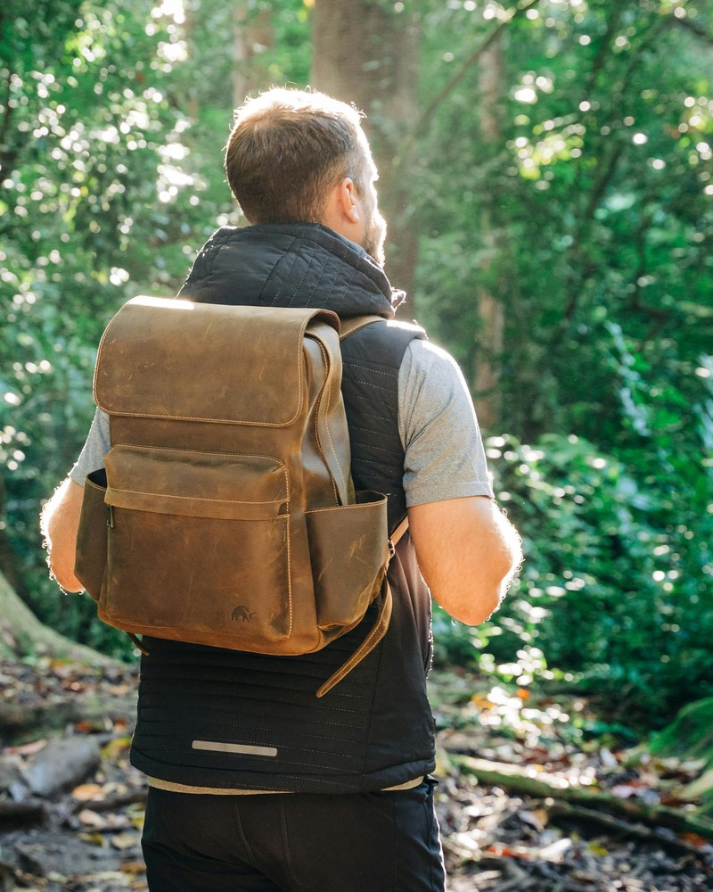

Deuter
Aircontact Core 45+10 SL
Zaino da trekking di lunga durata, perfetto per escursioni di più giorni e trekking impegnativi. Il sistema di ventilazione Aircontact garantisce comfort eccezionale anche con carichi pesanti.
CHF 269.–
CHF 229.–
- Capacità: 45 + 10 litri
- Peso: 2.35 kg
- Materiale: Poliammide 600D resistente
- Sistema schiena: Aircontact ergonomico
- Colore: Verde alpino / nero
- Modello: SL specifico per donna
- Garanzia: 3 anni produttore
- Idoneo per: Trekking di 3-7 giorni